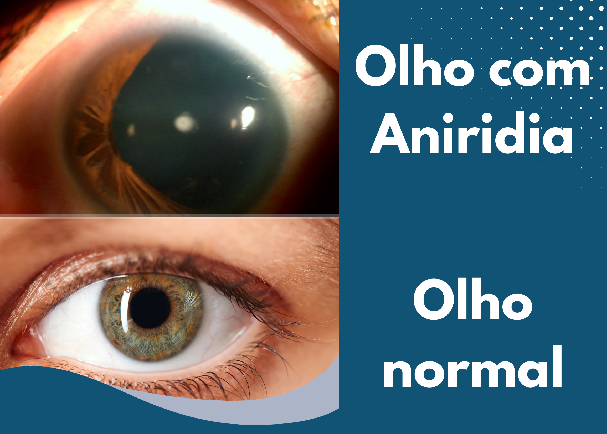

Aniridia
O que é Aniridia?
A aniridia é uma condição rara onde a íris (a parte colorida do olho) não se desenvolve completamente. Pense nela como um "diafragma quebrado" de uma câmera - sem controle adequado da luz que entra. Afeta ambos os olhos em 98% dos casos e geralmente é detectada logo no nascimento.
Sintomas mais comuns
Além da aparência característica dos olhos (com pupilas muito grandes), os pacientes costumam sentir:
- Sensação de "luz demais" - como se estivesse sempre olhando para o sol
- Visão embaçada mesmo usando óculos
- Dificuldade para focar em objetos próximos
- Olhos que tremem involuntariamente (nistagmo)
Em cerca de 50% dos casos, pode vir acompanhada de glaucoma ou catarata precoce.
O que causa essa condição?
Na maioria das vezes (cerca de 2/3 dos casos), é herdada dos pais. Mas também pode ocorrer por:
- Mutações genéticas espontâneas no gene PAX6
- Traumas oculares graves durante a infância
- Complicações cirúrgicas raras na região da íris
Como é feito o diagnóstico?
O teste do olhinho no recém-nascido já pode levantar suspeitas. Para confirmar, os médicos usam:
- Lâmpada de fenda - exame detalhado das estruturas oculares
- Testes genéticos - para identificar mutações no gene PAX6
- Tonometria - mede a pressão intraocular (importante para detectar glaucoma associado)
Como conviver melhor com aniridia?
Embora não exista cura, estas estratégias melhoram muito a qualidade de vida:
- Óculos com lentes fotocromáticas - escurecem automaticamente na luz forte
- Chapéus de aba larga - criam sombra adicional para os olhos
- Colírios lubrificantes - muitos pacientes sofrem com olho seco
- Acompanhamento anual - para monitorar glaucoma e catarata
Tratamentos disponíveis
As opções variam conforme cada caso:
- Lentes de contato cosméticas - simulam uma íris artificial e reduzem a entrada de luz
- Implantes anelares - dispositivos cirúrgicos que regulam o tamanho pupilar
- Terapia visual - exercícios para maximizar a visão residual
- Cirurgia de glaucoma/catarata - quando essas condições aparecem
Perguntas frequentes
- "É contagiosa?" Não, é uma condição genética ou adquirida, mas não infecciosa.
- "Piora com a idade?" A aniridia em si não, mas as complicações podem progredir.
- "Meu filho poderá ler normalmente?" Com adaptações como lupas e livros em fonte grande, sim.